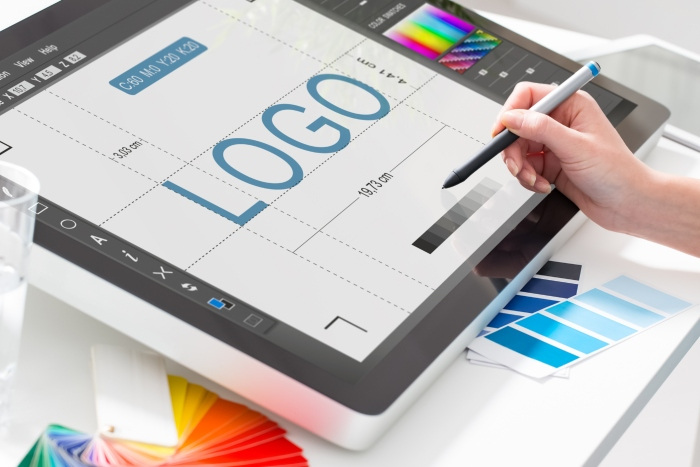

Le marketing digital
Comment fait le marketing digital avec les différents outils disponible chez vous?.
Le marketing digital est essentiel. Sans lui, votre business est un fantôme, invisible et ignoré. Un fantôme qui flotte au-dessus de votre site Internet désert, de vos réseaux sociaux dépeuplés et de votre compte en banque vide.
Le marketing digital est un domaine du numérique en pleine expansion , surtout avec la transformation numérique où toutes les entreprises cherchent à moderniser leur processus de communication.
5 raisons importants pour se faire former en marketing digital
Faire evoluer les equipes de son entreprise | |
Pouvoir se former dans le digital avec des experts | |
Des offres d'emplois nombreuses | |
Developper un large evantail d'aptitudes | |
La maitrise de marketing permet de gagner enormement en polyvalence; |
Le Graphisme
Véritable professionnel de l’image, le designer graphique utilise régulièrement des logiciels dédiés pour assurer l’exécution et l’impression de ses créations. Il doit maitriser plusieurs notions techniques de base pour mener à bien son métier..
En choissisant cette formation vous avez droit aux différents logiciels de montage photo, ainsi qu'à une série de vidéos qui vous montre de A à Z comment réaliser des oeuvres graphiques. Nous vous suivons à chaque étapes de votre formation afin de vous orienter en cas de soucis.
Nous vous montrerons dans cette formation les différentes méthodes pour se faire de l'argent avec le Graphisme. |
Développement web,Desktop et mobile
Le développeur web s'occupe du développement informatique de sites, applications, plateformes web. Il développe de nouvelles fonctionnalités et/ou maintient les fonctionnalités existantes.